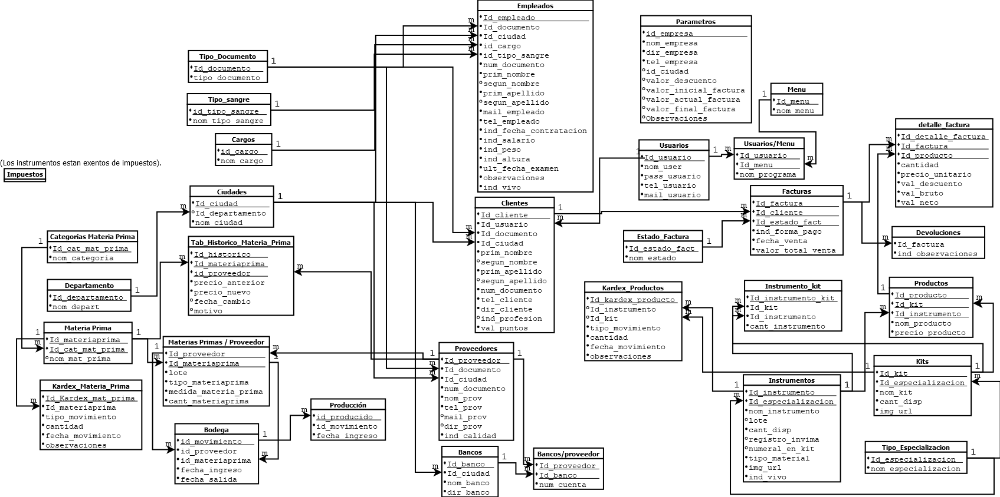

SID
MANUAL TÉCNICO Y DE OPERACIÓN DEL SISTEMA
Specialized Instrumental Dental
Sistema de Gestión de Inventario, Producción y Ventas
de Instrumentación Odontológica Especializada
Versión: 2.1
Fecha de Elaboración: Abril 2026
Autores: Juan Barrios y Yulvin Santiago
Tipo de Documento: Manual Técnico
Programa: Análisis y Desarrollo de Software (ADSO)
Centro de Formación: SENA
Ubicación: Bucaramanga, Santander — Colombia
1. OBJETIVO
El presente manual tiene como objetivo documentar de manera integral la arquitectura técnica, el diseño,
la funcionalidad, la configuración y los procedimientos de despliegue del sistema de información
"Specialized Instrumental Dental", proporcionando al equipo de desarrollo, mantenimiento
y soporte una referencia completa que facilite la comprensión, el mantenimiento evolutivo y la
transferencia de conocimiento del sistema.
Este documento sirve como guía para:
- Comprender la arquitectura de tres capas (Frontend, Backend, Base de Datos) implementada.
- Identificar los componentes del sistema y sus interacciones.
- Facilitar la instalación y configuración del sistema en nuevos ambientes.
- Documentar los patrones de diseño y estándares de seguridad aplicados.
- Proveer una guía de resolución de problemas técnicos comunes.
2. ALCANCE
Este manual abarca la totalidad de los módulos que componen el sistema Specialized Instrumental Dental,
incluyendo:
- Módulo de Autenticación y Seguridad: Login con JWT, gestión de sesiones, cabeceras de seguridad HTTP.
- Módulo de Dashboard Administrativo: Panel de estadísticas, alertas de stock, métricas de eficiencia.
- Módulo de Gestión de Instrumental: CRUD de instrumentos individuales y kits (conjuntos de instrumentos).
- Módulo de Gestión de Materia Prima: CRUD de materias primas, categorías y relaciones con proveedores.
- Módulo de Historial y Kardex: Registro de movimientos de inventario (entradas, salidas, ajustes).
- Módulo de Bodega y Producción: Control del flujo de materia prima hacia la línea de producción.
- Módulo de Facturación y Ventas: Generación de facturas, devoluciones, cierre de caja diario.
- Módulo de Tienda del Cliente: Catálogo de productos, carrito de compras, perfil de usuario.
- Módulo de Auditoría (Audit Trail): Trazabilidad completa de todas las operaciones sobre la base de datos.
- Landing Page Pública: Página de inicio con catálogo y consentimiento de cookies.
El alcance comprende la documentación técnica del sistema tal como se encuentra en su versión actual (V2.0),
y está dirigido al personal técnico con conocimientos en desarrollo web, PHP y PostgreSQL.
4. ¿QUÉ ES EL MANUAL TÉCNICO Y DE OPERACIÓN DEL SISTEMA?
El Manual Técnico y de Operación del Sistema es un documento cuyo propósito es ilustrar la definición,
diseño, organización y estructura del sistema de información Specialized Instrumental Dental.
Está dirigido a:
- Desarrolladores y Arquitectos de Software: Para comprender la arquitectura, los patrones de diseño empleados y facilitar el mantenimiento evolutivo del código.
- Ingenieros de Pruebas (QA): Para entender los flujos de datos y las validaciones implementadas en cada capa del sistema.
- Personal de Soporte y Operaciones: Para ejecutar procedimientos de instalación, configuración, despliegue y resolución de incidencias.
- Instructores y Evaluadores del SENA: Para verificar la aplicación de buenas prácticas, estándares de seguridad y patrones de diseño en el proyecto formativo.
Este documento se elabora siguiendo los lineamientos del Marco de Referencia de Arquitectura TI de
MINTIC (LI.SIS.16), que establece que todo sistema de información debe contar con
documentación técnica y de operación actualizada para garantizar el soporte tecnológico.
5. INTRODUCCIÓN
Specialized Instrumental Dental es un sistema web integral diseñado para una empresa
fabricante de instrumentación odontológica especializada, ubicada en Bucaramanga, Santander (Colombia).
La empresa se dedica a la fabricación, gestión de inventario, y comercialización de instrumentos dentales
individuales y kits especializados en áreas como Endodoncia, Periodoncia, Estética Dental y Esterilización.
El sistema nace como respuesta a la necesidad de digitalizar y centralizar los procesos operativos de la empresa,
que anteriormente se gestionaban de forma manual o con herramientas dispersas. El alcance funcional cubre todo
el ciclo de vida del producto: desde la recepción de materia prima en bodega, pasando por el control de
producción, la gestión de inventario (instrumentos y kits), hasta la venta al cliente final con generación
de facturas y registro de devoluciones.
Desde el punto de vista técnico, el sistema implementa una arquitectura de tres capas (3-Tier),
con un frontend construido en HTML5, CSS3 y JavaScript vanilla, un backend en PHP 8+ que actúa como API RESTful,
y una base de datos PostgreSQL que no solo almacena datos, sino que contiene gran parte de la lógica de negocio
mediante funciones en PL/pgSQL. Esta decisión arquitectónica delega las operaciones complejas (como facturación,
kardex y validaciones cruzadas) al motor de la base de datos, garantizando rendimiento, integridad transaccional
y consistencia de datos.
El sistema cuenta con dos interfaces principales:
- Panel de Administración: Accesible para usuarios con rol de administrador (
id_menu = 1),
que permite la gestión completa de todas las entidades del sistema (empleados, clientes, proveedores,
instrumentos, kits, productos, materia prima, bodega, producción, facturación, kardex y auditoría).
- Tienda del Cliente: Accesible para usuarios con rol de cliente (
id_menu = 2),
que ofrece un catálogo de productos con búsqueda, carrito de compras y gestión de perfil.
6. TAXONOMÍA Y CONTENIDO DEL MANUAL TÉCNICO
6.1 Descripción del Sistema de Información Desarrollado
| Característica | Detalle |
|---|
| Nombre del Sistema | Specialized Instrumental Dental (SID) |
| Tipo de Aplicación | Aplicación Web (SPA parcial con carga dinámica de vistas) |
| Dominio de Negocio | Fabricación y comercialización de instrumentación odontológica especializada |
| Usuarios Objetivo | Personal administrativo de la empresa (administradores) y clientes profesionales del sector odontológico |
| Roles del Sistema | Administrador (id_menu = 1) y Cliente (id_menu = 2) |
| Arquitectura | Tres capas (3-Tier): Frontend → Backend (API RESTful) → Base de Datos (con lógica de negocio en PL/pgSQL) |
| Patrón de Diseño | MVC (Modelo-Vista-Controlador) con controladores atómicos por módulo funcional |
| Metodología | Desarrollo iterativo e incremental |
Valor para el Negocio
El sistema aporta valor a la organización al:
- Centralizar la gestión de inventario, eliminando hojas de cálculo aisladas y reduciendo errores humanos.
- Automatizar el kardex de movimientos, proporcionando trazabilidad completa de cada instrumento y materia prima.
- Proveer un dashboard con métricas en tiempo real (ventas diarias, alertas de stock crítico, usuarios activos).
- Ofrecer un canal de venta digital (tienda online) para los clientes profesionales.
- Garantizar la auditoría completa de operaciones para cumplimiento normativo (INVIMA, trazabilidad de lotes).
6.2 Diseño Técnico del Sistema de Información
6.2.1 Esquema o Modelo de Requerimientos
El sistema fue desarrollado siguiendo un modelo de requerimientos basado en módulos funcionales.
A continuación se listan los requerimientos funcionales principales organizados por módulo:
RF-01: Módulo de Autenticación
| ID | Requerimiento | Prioridad |
|---|
| RF-01.1 | El sistema debe permitir inicio de sesión con usuario y contraseña, generando un token JWT. | Alta |
| RF-01.2 | El sistema debe soportar registro de nuevos usuarios con validación de campos. | Alta |
| RF-01.3 | El sistema debe permitir la recuperación de contraseña vía correo electrónico. | Media |
| RF-01.4 | El sistema debe cerrar sesión de forma segura, destruyendo token y sesión PHP. | Alta |
| RF-01.5 | El sistema debe redirigir al usuario según su rol (Admin → menuPrincipal, Cliente → menuCliente). | Alta |
| RF-01.6 | Las contraseñas deben almacenarse con hash seguro (password_hash de PHP). | Alta |
RF-02: Módulo de Dashboard
| ID | Requerimiento | Prioridad |
|---|
| RF-02.1 | Mostrar tarjetas de estadísticas con conteo de usuarios, clientes, empleados, proveedores, productos. | Alta |
| RF-02.2 | Mostrar alertas de stock crítico (instrumentos y kits con stock por debajo del mínimo). | Alta |
| RF-02.3 | Mostrar ventas diarias y producto con mayor venta. | Media |
| RF-02.4 | Proveer gráficas interactivas de ganancia neta y análisis financiero. | Media |
RF-03: Módulo de Gestión (CRUD Genérico)
| ID | Requerimiento | Prioridad |
|---|
| RF-03.1 | CRUD completo para: Usuarios, Empleados, Clientes, Proveedores. | Alta |
| RF-03.2 | CRUD completo para: Instrumentos, Kits, Productos, Materias Primas, Categorías. | Alta |
| RF-03.3 | Todas las eliminaciones deben ser lógicas (soft delete con ind_vivo = false). | Alta |
| RF-03.4 | Soporte para restauración de registros eliminados lógicamente. | Media |
| RF-03.5 | Carga de imágenes para instrumentos, kits, productos y materias primas. | Media |
RF-04: Módulo de Inventario y Kardex
| ID | Requerimiento | Prioridad |
|---|
| RF-04.1 | Registrar movimientos Kardex de instrumentos (entradas de fabricación, salidas por venta). | Alta |
| RF-04.2 | Registrar movimientos Kardex de kits (ensamblaje, ventas). | Alta |
| RF-04.3 | Registrar movimientos Kardex de materia prima (entradas de proveedor, consumo en producción). | Alta |
| RF-04.4 | Control de bodega: ingreso de materia prima con trazabilidad de proveedor y lote. | Alta |
| RF-04.5 | Control de producción: transición de materia prima de bodega a línea de producción. | Alta |
RF-05: Módulo de Facturación
| ID | Requerimiento | Prioridad |
|---|
| RF-05.1 | Generar facturas con detalle de productos, cantidades, precios y descuento global configurable. | Alta |
| RF-05.2 | Impresión de facturas en formato PDF. | Media |
| RF-05.3 | Gestión de devoluciones vinculadas a facturas. | Media |
| RF-05.4 | Cierre de caja diario con totalización de ventas. | Media |
RF-06: Módulo de Tienda del Cliente
| ID | Requerimiento | Prioridad |
|---|
| RF-06.1 | Catálogo de productos con filtros por categoría/especialización. | Alta |
| RF-06.2 | Búsqueda de productos por nombre. | Alta |
| RF-06.3 | Carrito de compras con actualización de cantidades. | Alta |
| RF-06.4 | Gestión de perfil del cliente y cambio de contraseña. | Media |
Requerimientos No Funcionales
| ID | Requerimiento | Categoría |
|---|
| RNF-01 | Todas las consultas SQL deben usar sentencias preparadas (PDO) para prevenir inyección SQL. | Seguridad |
| RNF-02 | Implementar cabeceras de seguridad HTTP: CSP, X-Frame-Options, X-Content-Type-Options, HSTS. | Seguridad |
| RNF-03 | El sistema debe registrar toda operación de escritura en el audit trail automáticamente. | Auditoría |
| RNF-04 | Las sesiones deben expirar después de un tiempo de inactividad configurable (parámetro ind_idle). | Seguridad |
| RNF-05 | La interfaz debe ser responsiva y funcional en navegadores modernos (Chrome, Firefox, Edge). | Usabilidad |
| RNF-06 | El sistema debe soportar al menos 100 registros por tabla sin degradación perceptible. | Rendimiento |
6.2.1.1 Diagramas de Casos de Uso
A continuación se presentan los diagramas de casos de uso del sistema, organizados por módulo funcional.
Estos diagramas describen la interacción entre los actores (Administrador y Cliente) y las funcionalidades
del sistema.
Sección pendiente de completar: Insertar aquí los diagramas de casos de uso elaborados por el equipo de desarrollo.
CU-01: Módulo de Autenticación
📊 Insertar Diagrama de Casos de Uso
Actores: Usuario, Sistema · Casos: Login, Registro, Recuperar Contraseña, Logout
| Caso de Uso | Actor | Precondición | Flujo Principal | Postcondición |
|---|
| CU-01.1 Iniciar Sesión | Usuario | El usuario tiene una cuenta registrada | 1. Ingresa usuario y contraseña → 2. El sistema valida credenciales → 3. Genera JWT → 4. Redirige según rol | Sesión activa con token. |
| CU-01.2 Registrarse | Usuario | No tiene cuenta previa | 1. Llena formulario → 2. Sistema valida campos → 3. Crea usuario en BD → 4. Redirige a login | Usuario registrado con rol Cliente. |
| CU-01.3 Recuperar Contraseña | Usuario | Tiene cuenta y correo válido | 1. Ingresa correo → 2. Sistema envía enlace → 3. Usuario cambia contraseña | Contraseña actualizada. |
| CU-01.4 Cerrar Sesión | Usuario | Sesión activa | 1. Clic en cerrar sesión → 2. Sistema destruye token y sesión | Sesión finalizada. Redirige a login. |
CU-02: Módulo de Gestión Administrativa
📊 Insertar Diagrama de Casos de Uso
Actores: Administrador · Casos: CRUD Empleados, Clientes, Proveedores, Instrumentos, Kits, Productos
| Caso de Uso | Actor | Precondición | Flujo Principal | Postcondición |
|---|
| CU-02.1 Crear Registro | Administrador | Sesión activa, rol admin | 1. Selecciona módulo → 2. Clic Crear → 3. Llena formulario → 4. Envía datos → 5. BD valida e inserta | Registro creado y visible en tabla. |
| CU-02.2 Editar Registro | Administrador | Registro existente y activo | 1. Clic editar → 2. Modifica campos → 3. Guarda → 4. BD valida y actualiza | Registro actualizado. Audit trail registra cambio. |
| CU-02.3 Eliminar Registro | Administrador | Registro sin dependencias activas | 1. Clic eliminar → 2. Confirma → 3. Sistema marca ind_vivo=false | Registro oculto (soft delete). |
| CU-02.4 Restaurar Registro | Administrador | Registro eliminado lógicamente | 1. Va a pestaña Inhabilitados → 2. Clic restaurar → 3. ind_vivo=true | Registro visible nuevamente. |
CU-03: Módulo de Inventario y Kardex
📊 Insertar Diagrama de Casos de Uso
Actores: Administrador · Casos: Registrar Movimiento Kardex, Consultar Historial, Bodega→Producción
| Caso de Uso | Actor | Precondición | Flujo Principal | Postcondición |
|---|
| CU-03.1 Registrar Movimiento | Administrador | Instrumento/Kit existente | 1. Selecciona item → 2. Indica tipo (Entrada/Salida) → 3. Cantidad y obs. → 4. BD actualiza stock | Movimiento registrado, stock actualizado. |
| CU-03.2 Consultar Kardex | Administrador | Sesión activa | 1. Navega a Historial → 2. Selecciona tipo → 3. Ve tabla de movimientos | Lista de movimientos ordenada por fecha. |
| CU-03.3 Mover a Producción | Administrador | Materia prima en bodega | 1. Selecciona material en Bodega → 2. Clic "Enviar a Producción" → 3. Se registra en tab_producc | Material en producción con trazabilidad. |
CU-04: Módulo de Tienda del Cliente
📊 Insertar Diagrama de Casos de Uso
Actores: Cliente · Casos: Navegar Catálogo, Buscar Producto, Agregar al Carrito, Comprar
| Caso de Uso | Actor | Precondición | Flujo Principal | Postcondición |
|---|
| CU-04.1 Navegar Catálogo | Cliente | Sesión activa, rol cliente | 1. Ve lista de productos → 2. Filtra por categoría → 3. Selecciona producto | Detalle de producto visible. |
| CU-04.2 Buscar Producto | Cliente | Sesión activa | 1. Escribe en barra de búsqueda → 2. Sistema filtra en tiempo real | Productos coincidentes mostrados. |
| CU-04.3 Agregar al Carrito | Cliente | Producto con stock disponible | 1. Clic "Agregar" → 2. Se añade al carrito → 3. Badge actualiza conteo | Producto en carrito. |
| CU-04.4 Realizar Compra | Cliente | Carrito con ≥1 producto | 1. Va al carrito → 2. Confirma pedido → 3. Sistema genera factura → 4. Stock se descuenta | Factura generada, stock actualizado. |
6.2.2 Software Base del Sistema y Prerequisitos
Stack Tecnológico
| Capa | Tecnología | Versión Mínima | Propósito |
|---|
| Sistema Operativo | Windows / Linux | Windows 10+ / Ubuntu 20.04+ | Sistema anfitrión del servidor |
| Servidor Web | Apache HTTP Server | 2.4+ | Servir archivos estáticos y ejecutar PHP |
| Lenguaje Backend | PHP | 8.0+ | Lógica de negocio, API RESTful |
| Base de Datos | PostgreSQL | 13+ | Persistencia de datos + lógica PL/pgSQL |
| Frontend | HTML5 + CSS3 + JavaScript (ES6+) | — | Interfaz de usuario |
| Entorno de Desarrollo | XAMPP / WAMP / Laragon | Última versión estable | Entorno local Apache+PHP+PostgreSQL |
Extensiones PHP Requeridas
| Extensión | Propósito |
|---|
pdo_pgsql | Driver de conexión PDO para PostgreSQL |
json | Codificación/decodificación de JSON (comunicación API) |
mbstring | Manejo de cadenas multibyte (caracteres UTF-8 / español) |
openssl | Generación de tokens aleatorios seguros (CSRF, JWT) |
session | Gestión de sesiones del servidor |
fileinfo | Detección de tipo MIME para carga de imágenes |
Librerías Frontend (CDN)
| Librería | Versión | Propósito |
|---|
| Font Awesome | 6.x | Iconos vectoriales para la interfaz |
| SweetAlert2 | 11.x | Alertas y diálogos interactivos (reemplazo de alert/confirm nativos) |
| Google Fonts (Inter) | — | Tipografía principal del sistema |
Navegadores Compatibles
| Navegador | Versión Mínima | Estado |
|---|
| Google Chrome | 90+ | ✅ Totalmente compatible |
| Mozilla Firefox | 88+ | ✅ Totalmente compatible |
| Microsoft Edge | 90+ | ✅ Totalmente compatible |
| Safari | 14+ | ⚠️ Compatible parcial |
| Internet Explorer | — | ❌ No compatible (ES6+) |
6.2.3 Componentes y Estándares
Arquitectura de Alto Nivel
El sistema implementa una arquitectura de tres capas (3-Tier) con un patrón
MVC (Modelo-Vista-Controlador) refactorizado en controladores atómicos por módulo funcional:
| Capa | Componentes | Responsabilidad |
|---|
Presentación
(Frontend) |
HTML5, CSS3, JavaScript vanilla, controladores JS especializados |
Renderizado de la interfaz de usuario, validaciones del lado del cliente, comunicación asíncrona con el backend vía fetch(). |
Lógica de Negocio
(Backend) |
PHP 8+, API RESTful, controladores PHP por módulo |
Procesamiento de peticiones HTTP, validaciones de seguridad (sesión, roles), delegación de operaciones a la capa de datos. |
Persistencia
(Base de Datos) |
PostgreSQL, funciones PL/pgSQL, triggers de auditoría |
Almacenamiento de datos, lógica de negocio compleja (facturación, kardex), validaciones de integridad, auditoría automática. |
Patrones de Diseño Implementados
| Patrón | Implementación en el Sistema |
|---|
| MVC |
Vista: archivos .php con includes (header, sidebar, footer). Controlador: controllers/ tanto en JS como PHP. Modelo: querys.php como capa de acceso a datos. |
| Singleton / Punto Único de Entrada |
api_gestion.php centraliza todas las peticiones administrativas (GET/POST), forzando la inclusión de security_headers.php en cada llamada. |
| Data Mapper / Query Class |
CQuerys actúa como capa de abstracción de datos. Ningún controlador escribe SQL directamente; solicita operaciones a la clase. |
| Programación Orientada a BD |
La lógica pesada (facturación, kardex, validaciones cruzadas) se delega a funciones PL/pgSQL en PostgreSQL, garantizando operaciones atómicas e integridad transaccional. |
| Soft Delete |
Todas las operaciones DELETE usan ind_vivo = false en vez de DELETE real, preservando historial y permitiendo restauración. |
| SPA Parcial |
El panel administrativo usa navegación basada en hash (#instrumental, #materia-prima) para cargar vistas dinámicamente sin recargar la página completa. |
| Audit Trail (Observer) |
Triggers automáticos en PostgreSQL disparan la función de auditoría ante cualquier INSERT, UPDATE o DELETE, registrando: usuario, tabla, datos anteriores, datos nuevos y marca temporal. |
Estándares de Seguridad Aplicados (OWASP)
| Vulnerabilidad OWASP | Control Implementado | Archivo |
|---|
| A01:2021 — Broken Access Control | Validación de roles por sesión; solo admin (id_menu=1) puede realizar operaciones de escritura. | api_gestion.php |
| A02:2021 — Cryptographic Failures | JWT firmado con HMAC-SHA256; contraseñas hasheadas con password_hash(). | jwt.php, validar.php |
| A03:2021 — Injection | Todas las queries usan sentencias preparadas (PDO + bindValue). | querys.php |
| A05:2021 — Security Misconfiguration | Cabeceras HTTP: CSP, X-Frame-Options, X-Content-Type-Options, Referrer-Policy, Permissions-Policy. | security_headers.php |
| A07:2021 — XSS | Función h() para sanitización de salida con htmlspecialchars(); CSP restringe fuentes de scripts. | security_headers.php |
| A08:2021 — CSRF | Tokens anti-CSRF generados por sesión con random_bytes(32). | security_headers.php |
6.2.4 Modelo de Datos
Diagrama Entidad-Relación

Figura 1. Modelo Relacional del Sistema — Versión 2.0
Diccionario de Datos — Todas las Tablas del Sistema
Convenciones: PK = Clave Primaria, FK = Clave Foránea, NN = Not Null, D = Valor por Defecto. Campos comunes ind_vivo, fec_insert, fec_update están presentes en la mayoría de tablas y se omiten para brevedad (excepto en la primera tabla donde se documentan).
📋 Grupo 1: Configuración del Sistema
tab_parametros — Configuración Global de la Empresa
| Campo | Tipo | Restricción | Descripción |
|---|
| id_empresa | INTEGER | PK | Identificador único de la empresa |
| nom_empresa | VARCHAR | NN | Razón social de la empresa |
| dir_empresa | VARCHAR | NN | Dirección fiscal |
| tel_empresa | BIGINT | NN | Teléfono principal |
| id_ciudad | INTEGER | NN, FK → tab_ciudades | Ciudad de ubicación |
| val_pordesc | NUMERIC | NN | Porcentaje de descuento global para facturas |
| val_inifact | INTEGER | NN | Número inicial de facturación |
| val_finfact | INTEGER | NN | Número final de facturación |
| val_actfact | INTEGER | NN | Número actual de facturación |
| val_observa | VARCHAR | NN | Observaciones o descripción de la empresa |
| ind_idle | INTEGER | NN, D: 30 | Tiempo de inactividad de sesión en minutos |
| ind_salario | NUMERIC | NN | Salario mínimo vigente para validaciones |
| reg_invima | VARCHAR | NN | Número de registro INVIMA de la empresa |
🔐 Grupo 2: Usuarios y Seguridad
tab_users — Usuarios del Sistema
| Campo | Tipo | Restricción | Descripción |
|---|
| id_user | SERIAL | PK | Identificador autoincremental del usuario |
| nom_user | VARCHAR | NN, UNIQUE | Nombre de usuario para login |
| pass_user | VARCHAR | NN | Contraseña (almacenada como hash bcrypt) |
| tel_user | BIGINT | NN | Teléfono del usuario |
| mail_user | VARCHAR | NN | Correo electrónico |
| ind_vivo | BOOLEAN | NN, D: true | Indicador de estado activo (soft delete) |
| fec_insert | TIMESTAMP | NN, D: NOW() | Fecha de creación del registro |
| fec_update | TIMESTAMP | NN | Fecha de última actualización |
tab_menu — Menús / Perfiles del Sistema
| Campo | Tipo | Restricción | Descripción |
|---|
| id_menu | INTEGER | PK | Identificador del menú/perfil |
| nom_menu | VARCHAR | NN | Nombre del menú (ej: Gestión de Usuarios, Gestión de Productos) |
tab_users_menu — Asignación de Menús a Usuarios
| Campo | Tipo | Restricción | Descripción |
|---|
| id_user | INTEGER | PK, FK → tab_users | Usuario asignado |
| id_menu | INTEGER | PK, FK → tab_menu | Menú/perfil asignado (1=Admin, 2=Cliente) |
| nom_prog | VARCHAR | NN | Nombre del programa/archivo asociado al menú |
📚 Grupo 3: Tablas de Catálogo (Auxiliares)
tab_tipo_documentos — Tipos de Documento de Identidad
| Campo | Tipo | Restricción | Descripción |
|---|
| id_documento | INTEGER | PK | Identificador del tipo de documento |
| nom_tipo_docum | VARCHAR | NN | Nombre del tipo (CC, TI, CE, NIT, Pasaporte) |
tab_departamentos — Departamentos de Colombia
| Campo | Tipo | Restricción | Descripción |
|---|
| id_depart | INTEGER | PK | Código DANE del departamento |
| nom_depart | VARCHAR | NN | Nombre del departamento |
tab_ciudades — Ciudades de Colombia
| Campo | Tipo | Restricción | Descripción |
|---|
| id_ciudad | INTEGER | PK | Código DANE de la ciudad |
| id_depart | INTEGER | NN, FK → tab_departamentos | Departamento al que pertenece |
| nom_ciudad | VARCHAR | NN | Nombre de la ciudad |
tab_cargos — Cargos de la Empresa
| Campo | Tipo | Restricción | Descripción |
|---|
| id_cargo | INTEGER | PK | Identificador del cargo |
| nom_cargo | VARCHAR | NN | Nombre del cargo (ej: Operario de Producción, Gerente General) |
tab_tipo_sangre — Tipos de Sangre (RH)
| Campo | Tipo | Restricción | Descripción |
|---|
| id_tipo_sangre | INTEGER | PK | Identificador del tipo de sangre |
| nom_tip_sang | VARCHAR | NN | Tipo de sangre (O+, O−, A+, A−, B+, B−, AB+, AB−) |
tab_bancos — Bancos Colombianos
| Campo | Tipo | Restricción | Descripción |
|---|
| id_banco | INTEGER | PK | Identificador del banco |
| id_ciudad | INTEGER | NN, FK → tab_ciudades | Ciudad de la sede principal |
| nom_banco | VARCHAR | NN | Nombre del banco |
| dir_banco | VARCHAR | NN | Dirección de la sede |
tab_unidades_medida — Unidades de Medida
| Campo | Tipo | Restricción | Descripción |
|---|
| id_unidad_medida | INTEGER | PK | Identificador de la unidad |
| nom_unidad | VARCHAR | NN | Abreviación (g, kg, mm, cm, m, unidades) |
tab_tipo_especializacion — Especializaciones Odontológicas
| Campo | Tipo | Restricción | Descripción |
|---|
| id_especializacion | INTEGER | PK | Identificador de la especialización |
| nom_espec | VARCHAR | NN | Nombre (Estética Dental, Esterilización, Endodoncia, Periodoncia) |
tab_estado_fact — Estados de Factura
| Campo | Tipo | Restricción | Descripción |
|---|
| id_estado_fact | INTEGER | PK | Identificador del estado |
| nom_estado_fact | VARCHAR | NN | Estado (Pagada, Pendiente, Anulada, Devuelta) |
👥 Grupo 4: Entidades Principales
tab_empleados — Empleados de la Empresa
| Campo | Tipo | Restricción | Descripción |
|---|
| id_empleado | SERIAL | PK | Identificador del empleado |
| id_documento | INTEGER | NN, FK → tab_tipo_documentos | Tipo de documento de identidad |
| id_ciudad | INTEGER | NN, FK → tab_ciudades | Ciudad de residencia |
| id_cargo | INTEGER | NN, FK → tab_cargos | Cargo en la empresa |
| id_tipo_sangre | INTEGER | NN, FK → tab_tipo_sangre | Tipo de sangre (RH) |
| ind_genero | INTEGER | NN, CHECK (1,2,3) | Género (1:Masculino, 2:Femenino, 3:Otro) |
| num_documento | VARCHAR | NN, UNIQUE | Número de documento de identidad |
| prim_nom, segun_nom | VARCHAR | NN / NULL | Primer y segundo nombre |
| prim_apell, segun_apell | VARCHAR | NN / NULL | Primer y segundo apellido |
| mail_empleado | VARCHAR | NN | Correo electrónico corporativo |
| tel_empleado | BIGINT | NN | Teléfono de contacto |
| dir_emple | VARCHAR | NN | Dirección de residencia |
| ind_fecha_contratacion | DATE | NN | Fecha de contratación |
| ind_peso | NUMERIC | NN | Peso en kg (salud ocupacional) |
| ind_altura | NUMERIC | NN | Altura en metros |
| ult_fec_exam | DATE | NN | Fecha del último examen médico |
| observ | VARCHAR | NN | Observaciones |
| id_banco | INTEGER | NN, FK → tab_bancos | Banco de nómina |
| num_cuenta | VARCHAR | NN | Número de cuenta bancaria |
tab_clientes — Clientes del Sistema
| Campo | Tipo | Restricción | Descripción |
|---|
| id_cliente | SERIAL | PK | Identificador del cliente |
| id_documento | INTEGER | NN, FK → tab_tipo_documentos | Tipo de documento |
| id_ciudad | INTEGER | NN, FK → tab_ciudades | Ciudad de residencia |
| ind_genero | INTEGER | NN, CHECK (1,2,3) | Género (1:Masculino, 2:Femenino, 3:Otro) |
| prim_nom, segun_nom | VARCHAR | NN / NULL | Primer y segundo nombre |
| prim_apell, segun_apell | VARCHAR | NN / NULL | Primer y segundo apellido |
| num_documento | VARCHAR | NN | Número de documento |
| tel_cliente | BIGINT | NN | Teléfono de contacto |
| dir_cliente | VARCHAR | NN | Dirección de residencia |
| ind_profesion | VARCHAR | NN | Profesión odontológica (Ortodoncista, Endodoncista, etc.) |
| val_puntos | INTEGER | NN, D: 0 | Puntos de fidelización acumulados |
tab_proveedores — Proveedores de Materia Prima
| Campo | Tipo | Restricción | Descripción |
|---|
| id_prov | SERIAL | PK | Identificador del proveedor |
| id_documento | INTEGER | NN, FK → tab_tipo_documentos | Tipo de documento (generalmente NIT) |
| id_ciudad | INTEGER | NN, FK → tab_ciudades | Ciudad del proveedor |
| num_documento | VARCHAR | NN | NIT o documento del proveedor |
| nom_prov | VARCHAR | NN | Razón social del proveedor |
| tel_prov | BIGINT | NN | Teléfono |
| mail_prov | VARCHAR | NN | Correo electrónico |
| dir_prov | VARCHAR | NN | Dirección |
| ind_calidad | VARCHAR | NN | Indicador de calidad / observaciones |
tab_bancos_proveedor — Cuentas Bancarias de Proveedores
| Campo | Tipo | Restricción | Descripción |
|---|
| id_prov | INTEGER | PK, FK → tab_proveedores | Proveedor asociado |
| id_banco | INTEGER | PK, FK → tab_bancos | Banco asociado |
| num_cuenta | VARCHAR | NN | Número de cuenta bancaria del proveedor |
🦷 Grupo 5: Inventario (Instrumentos, Kits, Materia Prima)
tab_instrumentos — Instrumentos Odontológicos Individuales
| Campo | Tipo | Restricción | Descripción |
|---|
| id_instrumento | SERIAL | PK | Identificador del instrumento |
| id_especializacion | INTEGER | NN, FK → tab_tipo_especializacion | Área (Endodoncia, Periodoncia, etc.) |
| nom_instrumento | VARCHAR | NN | Nombre descriptivo |
| lote | INTEGER | NN | Número de lote de fabricación |
| cant_disp | INTEGER | NN, D: 0 | Cantidad disponible en inventario |
| numeral_en_kit | INTEGER | NN | Posición numerada dentro de un kit |
| tipo_mat | INTEGER | NN | 1=Specialized (Acero), 2=Special (Aluminio) |
| img_url | VARCHAR | NN | Ruta relativa a la imagen |
| stock_min | INTEGER | NN, D: 0 | Umbral mínimo para alerta de stock |
| stock_max | INTEGER | NN, D: 0 | Umbral máximo de inventario |
tab_kits — Kits (Conjuntos de Instrumentos)
| Campo | Tipo | Restricción | Descripción |
|---|
| id_kit | SERIAL | PK | Identificador del kit |
| id_especializacion | INTEGER | NN, FK → tab_tipo_especializacion | Área de especialización |
| nom_kit | VARCHAR | NN | Nombre del kit |
| cant_disp | INTEGER | NN, D: 0 | Cantidad disponible |
| tipo_mat | INTEGER | NN | 1=Specialized (Acero), 2=Special (Aluminio) |
| img_url | VARCHAR | NN | Ruta relativa a la imagen |
| stock_min | INTEGER | NN, D: 0 | Umbral mínimo de stock |
| stock_max | INTEGER | NN, D: 0 | Umbral máximo de stock |
tab_instrumentos_kit — Composición de Kits (Qué instrumentos tiene cada kit)
| Campo | Tipo | Restricción | Descripción |
|---|
| id_instrumento_kit | SERIAL | PK | Identificador de la relación |
| id_kit | INTEGER | NN, FK → tab_kits | Kit contenedor |
| id_instrumento | INTEGER | NN, FK → tab_instrumentos | Instrumento incluido |
| cant_instrumento | INTEGER | NN | Cantidad de este instrumento en el kit |
tab_cat_mat_prim — Categorías de Materia Prima
| Campo | Tipo | Restricción | Descripción |
|---|
| id_cat_mat | SERIAL | PK | Identificador de la categoría |
| nom_categoria | VARCHAR | NN | Nombre (Varillas, Tornillos, Alambres) |
tab_materias_primas — Materias Primas
| Campo | Tipo | Restricción | Descripción |
|---|
| id_mat_prima | SERIAL | PK | Identificador de la materia prima |
| id_cat_mat | INTEGER | NN, FK → tab_cat_mat_prim | Categoría a la que pertenece |
| nom_materia_prima | VARCHAR | NN | Nombre de la materia prima |
| img_url | VARCHAR | NN | Ruta relativa a la imagen |
| stock_min | INTEGER | NN, D: 0 | Umbral mínimo de stock |
| stock_max | INTEGER | NN, D: 0 | Umbral máximo de stock |
tab_mat_primas_prov — Relación Materia Prima ↔ Proveedor
| Campo | Tipo | Restricción | Descripción |
|---|
| id_prov | INTEGER | PK, FK → tab_proveedores | Proveedor que suministra |
| id_mat_prima | INTEGER | PK, FK → tab_materias_primas | Materia prima suministrada |
| lote | INTEGER | NN | Número de lote del proveedor |
| tipo_mat_prima | VARCHAR | NN | Tipo de material (descripción) |
| valor_medida | NUMERIC | NN | Valor numérico de la medida |
| id_unidad_medida | INTEGER | NN, FK → tab_unidades_medida | Unidad de medida (g, kg, mm, etc.) |
| cant_mat_prima | INTEGER | NN | Cantidad disponible del proveedor |
💰 Grupo 6: Productos, Facturación y Ventas
tab_productos — Productos de Venta (Catálogo)
| Campo | Tipo | Restricción | Descripción |
|---|
| id_producto | SERIAL | PK | Identificador del producto |
| id_instrumento | INTEGER | NN, FK → tab_instrumentos (nullable) | Instrumento vinculado (si es producto individual) |
| id_kit | INTEGER | NN, FK → tab_kits (nullable) | Kit vinculado (si es producto tipo kit) |
| nombre_producto | VARCHAR | NN | Nombre comercial del producto |
| precio_producto | NUMERIC | NN | Precio de venta (COP) |
| img_url | VARCHAR | NN | URL de la imagen del producto |
tab_facturas — Facturas de Venta
| Campo | Tipo | Restricción | Descripción |
|---|
| id_factura | SERIAL | PK | Número consecutivo de factura |
| id_cliente | INTEGER | NN, FK → tab_clientes | Cliente que realiza la compra |
| id_estado_fact | INTEGER | NN, FK → tab_estado_fact | Estado: 1=Pagada, 2=Pendiente, 3=Anulada, 4=Devuelta |
| ind_forma_pago | INTEGER | NN | Forma de pago: 1=Efectivo, 2=Transferencia, 3=Mixto |
| fecha_venta | TIMESTAMP | NN | Fecha y hora de la venta |
| val_tot_fact | NUMERIC | NN | Valor total de la factura (con descuento aplicado) |
tab_detalle_facturas — Detalle de Productos por Factura
| Campo | Tipo | Restricción | Descripción |
|---|
| id_detalle_factura | SERIAL | PK | Identificador del detalle |
| id_factura | INTEGER | NN, FK → tab_facturas | Factura a la que pertenece |
| id_producto | INTEGER | NN, FK → tab_productos | Producto vendido |
| cantidad | INTEGER | NN | Cantidad vendida |
| precio_unitario | NUMERIC | NN | Precio unitario al momento de la venta |
| val_descuento | NUMERIC | NN, D: 0 | Descuento aplicado a esta línea |
| val_bruto | NUMERIC | NN | Valor bruto (cantidad × precio) |
| val_neto | NUMERIC | NN | Valor neto (bruto − descuento) |
tab_dev — Devoluciones (Cabecera)
| Campo | Tipo | Restricción | Descripción |
|---|
| id_factura | INTEGER | PK, FK → tab_facturas | Factura devuelta |
| ind_observaciones | VARCHAR | NN | Motivo de la devolución |
tab_devol_reparable — Gestión de Devoluciones Pendientes
| Campo | Tipo | Restricción | Descripción |
|---|
| id_devol_reparable | INTEGER | PK | Identificador único de la gestión |
| id_factura | INTEGER | NN, FK → tab_facturas | Factura de origen |
| id_producto | INTEGER | NN, FK → tab_productos | Producto devuelto |
| cantidad | DECIMAL(3,0) | NN | Cantidad de unidades devueltas |
| id_estado_devol | INTEGER | NN, D: 1 | Estado: 1=Pendiente, 2=Reparado (vuelve a stock), 3=Desechado (baja definitiva) |
🏭 Grupo 7: Bodega, Producción y Kardex
tab_bodega — Movimientos de Bodega (Ingreso de Materia Prima)
| Campo | Tipo | Restricción | Descripción |
|---|
| id_movimiento | SERIAL | PK | Identificador del movimiento |
| id_prov | INTEGER | NN, FK → tab_proveedores | Proveedor que entrega |
| id_mat_prima | INTEGER | NN, FK → tab_materias_primas | Materia prima ingresada |
| fec_ingreso | TIMESTAMP | NN | Fecha/hora de ingreso a bodega |
| fec_salida | TIMESTAMP | NN | Fecha/hora de salida (NULL = aún en bodega) |
tab_producc — Movimientos de Producción
| Campo | Tipo | Restricción | Descripción |
|---|
| id_producc | SERIAL | PK | Identificador de la producción |
| id_movimiento | INTEGER | NN, FK → tab_bodega | Movimiento de bodega origen |
| fec_ingreso | TIMESTAMP | NN | Fecha/hora de ingreso a producción |
tab_kardex_mat_prima — Kardex de Materia Prima
| Campo | Tipo | Restricción | Descripción |
|---|
| id_kardex_mat_prima | SERIAL | PK | Identificador del movimiento kardex |
| id_materia_prima | INTEGER | NN, FK → tab_materias_primas | Materia prima afectada |
| id_unidad_medida | INTEGER | NN, FK → tab_unidades_medida | Unidad de medida del movimiento |
| valor_medida | NUMERIC | NN | Valor numérico de la medida |
| tipo_movimiento | INTEGER | NN | 1=Entrada, 2=Salida, 3=Ajuste |
| cantidad | NUMERIC | NN | Cantidad del movimiento |
| fecha_movimiento | TIMESTAMP | NN | Fecha/hora del movimiento |
| observaciones | VARCHAR | NN | Descripción del movimiento |
tab_kardex_productos — Kardex de Instrumentos y Kits
| Campo | Tipo | Restricción | Descripción |
|---|
| id_kardex_producto | SERIAL | PK | Identificador del movimiento |
| id_instrumento | INTEGER | NN, FK → tab_instrumentos (nullable) | Instrumento afectado |
| id_kit | INTEGER | NN, FK → tab_kits (nullable) | Kit afectado |
| tipo_movimiento | INTEGER | NN | 1=Entrada (producción), 2=Salida (venta), 3=Ajuste |
| cantidad | NUMERIC | NN | Cantidad del movimiento |
| fecha_movimiento | TIMESTAMP | NN | Fecha/hora del movimiento |
| observaciones | VARCHAR | NN | Descripción del movimiento |
tab_historico_mat_prima — Histórico de Precios de Materia Prima
| Campo | Tipo | Restricción | Descripción |
|---|
| id_historico | SERIAL | PK | Identificador del registro histórico |
| id_materia_prima | INTEGER | NN, FK → tab_materias_primas | Materia prima cuyo precio cambió |
| id_proveedor | INTEGER | NN, FK → tab_proveedores | Proveedor involucrado |
| precio_anterior | NUMERIC | NN | Precio antes del cambio |
| precio_nuevo | NUMERIC | NN | Precio después del cambio |
| fecha_cambio | TIMESTAMP | NN | Fecha/hora del cambio de precio |
| motivo | VARCHAR | NN | Motivo del ajuste de precio |
Funciones SQL Almacenadas
El sistema utiliza más de 100 funciones PL/pgSQL organizadas en las siguientes categorías:
| Categoría | Cantidad | Convención de Nombres | Ejemplo / Recientes |
|---|
| Inserción | 28 | fun_insert_[entidad] | fun_insert_empleados() |
| Actualización | 34 | fun_update_[entidad] | fun_update_instrumentos() |
| Eliminación (lógica) | 34 | fun_delete_[entidad] | fun_delete_kit() |
| Consultas | 5 | fun_obtener_[dato] | fun_obtener_stats() |
| Transaccionales | 10 | fun_[proceso] | fun_resolver_devolucion(), fun_registrar_devolucion_multiple() |
| Validación | 4 | fun_valida_[entidad] | fun_valida_stock() |
| Auditoría | Triggers (Global) | audit_[tabla]_trigger | fun_audit_trail.sql |
6.2.5 Funcionalidad y Servicios Ofrecidos
Módulos del Sistema
| # | Módulo | Frontend (JS) | Backend (PHP) | Descripción |
|---|
| 1 | 🔐 Autenticación | inicio_sesion.js | validar.php, jwt.php, registrar.php | Login JWT, registro, recuperación de contraseña, cierre de sesión seguro |
| 2 | 📊 Dashboard | dashboard_controller.js | api_dashboard_controller.php | Tarjetas de estadísticas, alertas de stock, métricas en tiempo real |
| 3 | 🦷 Instrumental | instrumental_controller.js | api_instrumental_controller.php | CRUD de instrumentos y kits, kit builder, movimientos de inventario |
| 4 | 📦 Materia Prima | mat_prim_controller.js | api_mat_prim_controller.php | CRUD materia prima, categorías, relaciones con proveedores |
| 5 | 📜 Historial/Kardex | historial_controller.js | api_historial_controller.php | Kardex de instrumentos/kits, ventas, devoluciones |
| 6 | 🏭 Bodega/Producción | bodega_produccion.js | api_bodega_produccion.php | Flujo: Materia prima → Bodega → Producción → Instrumental listo |
| 7 | 💰 Facturación | (integrado en historial) | fun_fact.sql, imprimir_factura.php | Facturación, impresión PDF, cierre de caja |
| 8 | 🛒 Tienda Cliente | menu_cliente.js | menuCliente.php, api_productos.php | Catálogo, búsqueda, carrito de compras |
| 9 | 🔍 Auditoría | (consulta en historial) | fun_audit_trail.sql | Trazabilidad automática de todas las operaciones en BD |
| 10 | 🌐 Landing Page | index.js | api_productos.php | Página pública con catálogo, consentimiento de cookies |
Flujo de Datos: Ejemplo CRUD de Instrumentos
El siguiente diagrama ilustra el flujo completo de una operación de creación de instrumento:
- Usuario (Browser): Clic en "Crear Instrumento" → se abre el formulario modal.
- instrumental_controller.js: Captura los datos del formulario y los envía vía
POST con fetch().
- api_gestion.php: Verifica sesión activa y rol de administrador. Instancia
CQuerys y delega al controlador.
- ApiInstrumentalController: Valida los datos de entrada, extrae y procesa el archivo de imagen si existe.
- querys.php → insertInstrumento(): Ejecuta la consulta
SELECT fun_insert_instrumentos(...).
- PostgreSQL → fun_insert_instrumentos(): Valida unicidad, rango de stock, y realiza el INSERT. Los triggers de audit trail registran la operación.
- Respuesta JSON:
{"success": true, "message": "Creado correctamente"}
- JavaScript: Muestra un SweetAlert2 de éxito y recarga la tabla de instrumentos.
API RESTful — Endpoints Principales
Todas las peticiones administrativas se canalizan a través de api_gestion.php:
| Método | URL | Parámetros | Descripción |
|---|
| GET | /api_gestion.php?tipo=stats | — | Obtener estadísticas del dashboard |
| GET | /api_gestion.php?tipo=instrumentos | — | Listar instrumentos activos |
| GET | /api_gestion.php?tipo=kits | — | Listar kits activos |
| GET | /api_gestion.php?tipo=empleados | — | Listar empleados activos |
| GET | /api_gestion.php?tipo=clientes | — | Listar clientes activos |
| GET | /api_gestion.php?tipo=proveedores | — | Listar proveedores activos |
| POST | /api_gestion.php | accion=create, tipo, data{} | Crear nuevo registro (cualquier tipo) |
| POST | /api_gestion.php | accion=update, tipo, id, data{} | Actualizar registro existente |
| POST | /api_gestion.php | accion=delete, tipo, id | Eliminar registro (soft delete) |
| POST | /api_gestion.php | accion=restore, tipo, id | Restaurar registro eliminado |
| POST | /api_gestion.php | accion=resolver, tipo=historial, id, estado | Resolver devolución pendiente (Reparado/Desechado) |
Actualización V2.1 — Refactorización de Devoluciones:
Se ha implementado un sistema de gestión en dos pasos para las devoluciones de productos.
1. Registro: El producto ingresa a tab_devol_reparable con estado Pendiente.
2. Resolución: El administrador decide si el producto es Reparado (reingresa al stock físico y Kardex con tipo 5) o Desechado (se registra la baja sin afectar el stock disponible).
Este flujo garantiza que solo los productos aptos vuelvan a estar disponibles para la venta.
6.3 Despliegue y Configuración de Componentes
6.3.1 Organización de Componentes
La estructura de directorios del proyecto se organiza de la siguiente manera:
Front y Logica/
├── index.html # Landing page pública
├── .gitignore # Archivos excluidos del repositorio
│
├── html/ # Páginas HTML estáticas
│ ├── InicioSesion.html # Formulario de login con JWT
│ ├── logout.php # Cierre de sesión (redirect)
│ ├── menuCliente.php # Redirect → src/php/menuCliente.php
│ ├── menuPrincipal.php # Redirect → src/php/menuPrincipal.php
│ └── terminos.html # Términos y condiciones
│
├── styles/ # Hojas de estilo CSS
│ ├── index.css # Estilos landing page
│ ├── estilos_inicio_sesion.css # Estilos formulario login
│ ├── estilos_menuPrincipal.css # Estilos panel administrador
│ ├── menu_clientes.css # Estilos tienda del cliente
│ ├── estilos_terminos.css # Estilos términos y condiciones
│ └── validation.css # Estilos de validación de formularios
│
├── images/ # Recursos gráficos
│ ├── instrum/ # Fotos de instrumentos (uploads)
│ ├── kit/ # Fotos de kits (uploads)
│ ├── mat_prima/ # Fotos de materia prima (uploads)
│ ├── prod/ # Fotos de productos (uploads)
│ └── *.png # Logos y recursos estáticos
│
├── src/
│ ├── .env # Variables de entorno (credenciales)
│ │
│ ├── JavaScript/ # Lógica del frontend
│ │ ├── core/ # Módulos reutilizables
│ │ │ ├── api_service.js # Servicio HTTP centralizado (fetch)
│ │ │ ├── ui_components.js # Componentes UI reutilizables
│ │ │ └── validadores_base.js # Validaciones de formularios
│ │ │
│ │ ├── controllers/ # Controladores especializados
│ │ │ ├── dashboard_controller.js # Lógica del dashboard
│ │ │ ├── instrumental_controller.js # CRUD instrumentos y kits (58KB)
│ │ │ ├── mat_prim_controller.js # CRUD materia prima (46KB)
│ │ │ └── historial_controller.js # Kardex + ventas/devoluciones (54KB)
│ │ │
│ │ ├── logica.js # CRUD genérico, modales, formularios
│ │ ├── inicio_sesion.js # Lógica del login (JWT)
│ │ ├── index.js # Lógica de la landing page
│ │ ├── menuPrincipal.js # Inicialización del panel admin
│ │ ├── menu_cliente.js # Catálogo, carrito, búsqueda
│ │ ├── navigation.js # Navegación SPA (hash-based)
│ │ ├── bodega_produccion.js # Gestión bodega → producción
│ │ ├── cookies.js # Gestión cookies/consentimiento
│ │ ├── activity_tracker.js # Tracking de actividad del usuario
│ │ └── security.js # Protección DevTools + seguridad
│ │
│ └── php/ # Backend PHP
│ ├── conexion.php # Conexión PDO (Singleton)
│ ├── load_env.php # Cargador de variables .env
│ ├── querys.php # ★ CAPA DE DATOS (1480+ líneas)
│ ├── jwt.php # Generación/validación JWT
│ ├── security_headers.php # Cabeceras HTTP de seguridad
│ │
│ ├── validar.php # Endpoint de login
│ ├── registrar.php # Endpoint de registro
│ ├── recuperar.php # Recuperación de contraseña
│ ├── logout.php # Cierre de sesión seguro
│ ├── refrescar_sesion.php # Renovación de sesión/token
│ ├── actualizarPerfil.php # Actualización de perfil
│ │
│ ├── api_gestion.php # ★ ENRUTADOR API CENTRAL
│ ├── api_productos.php # API de productos (cliente)
│ ├── imprimir_factura.php # Generación de facturas PDF
│ │
│ ├── menuPrincipal.php # Vista principal admin (MVC)
│ ├── menuCliente.php # Vista principal cliente (MVC)
│ │
│ ├── controllers/ # Controladores PHP por módulo
│ │ ├── api_dashboard_controller.php
│ │ ├── api_instrumental_controller.php
│ │ ├── api_mat_prim_controller.php
│ │ ├── api_productos_controller.php
│ │ ├── api_historial_controller.php
│ │ └── api_bodega_produccion.php
│ │
│ └── includes/ # Componentes de vista
│ ├── header.php # Cabecera HTML + librerías
│ ├── sidebar.php # Menú lateral de navegación
│ └── footer.php # Modales globales + scripts
│
└── sql/ # Funciones SQL (PostgreSQL)
├── inserts_instalacion.sql # Script de datos iniciales
├── script_instalacion_audit_trail.sql # Script de triggers de auditoría
├── Consultas/ # 4 funciones de consulta
├── Fun_insert/ # 27 funciones de inserción
├── fun_update/ # 33 funciones de actualización
├── fun_delete/ # 34 funciones de eliminación
├── fun_transaccionales/ # 8 funciones de negocio
└── fun_audit_trail/ # Triggers de auditoría
6.3.2 Instalación
Paso 1: Prerequisitos de Software
- Instalar XAMPP (o equivalente) con Apache y PHP 8.0+.
- Instalar PostgreSQL 13+ (descargar de postgresql.org).
- Verificar que la extensión
pdo_pgsql esté habilitada en php.ini.
; Descomentar la siguiente línea en php.ini:
extension=pdo_pgsql
- Reiniciar Apache después de modificar
php.ini.
Paso 2: Configuración de la Base de Datos
- Abrir pgAdmin o conectar vía consola
psql.
- Crear la base de datos:
CREATE DATABASE specialized_dental
WITH ENCODING = 'UTF8'
LC_COLLATE = 'es_CO.UTF-8'
LC_CTYPE = 'es_CO.UTF-8';
- Crear las tablas según el modelo relacional. (El script DDL no está incluido en este repositorio; se debe crear a partir del modelo ER V2.0.)
- Ejecutar las funciones SQL en el siguiente orden:
-- 1. Funciones de Inserción
\i sql/Fun_insert/*.sql
-- 2. Funciones de Actualización
\i sql/fun_update/*.sql
-- 3. Funciones de Eliminación
\i sql/fun_delete/*.sql
-- 4. Funciones de Consulta
\i sql/Consultas/*.sql
-- 5. Funciones Transaccionales
\i sql/fun_transaccionales/*.sql
-- 6. Sistema de Auditoría (Triggers)
\i sql/script_instalacion_audit_trail.sql
-- 7. Datos Iniciales de Catálogo
\i sql/inserts_instalacion.sql
Paso 3: Despliegue del Código Fuente
- Copiar la carpeta
Front y Logica/ al directorio raíz del servidor web:
-- En XAMPP (Windows):
C:\xampp\htdocs\specialized\
-- En Apache (Linux):
/var/www/html/specialized/
- Asegurar que los permisos de escritura estén configurados para las carpetas de carga de imágenes:
chmod -R 777 images/instrum/
chmod -R 777 images/kit/
chmod -R 777 images/mat_prima/
chmod -R 777 images/prod/
Paso 4: Verificación de la Instalación
- Abrir el navegador y navegar a:
http://localhost/specialized/
- Verificar que la landing page cargue correctamente.
- Intentar iniciar sesión con las credenciales por defecto:
| Usuario | Contraseña | Rol |
|---|
admin | admin123 | Administrador |
- Verificar que el dashboard cargue con las tarjetas de estadísticas.
Las credenciales por defecto (admin/admin123) deben cambiarse inmediatamente en un entorno de producción.
El sistema detecta contraseñas en texto plano y las convierte automáticamente a hash en el primer inicio de sesión.
6.3.3 Configuración
Archivo de Variables de Entorno (.env)
El archivo src/.env contiene las credenciales y configuraciones sensibles. Este archivo
nunca debe subirse al repositorio (está incluido en el .gitignore).
# ══════════════════════════════════════
# CONFIGURACIÓN DE BASE DE DATOS
# ══════════════════════════════════════
DB_HOST=localhost
DB_PORT=5432
DB_NAME=specialized_dental
DB_USER=postgres
DB_PASSWORD=tu_contraseña_segura
# ══════════════════════════════════════
# CONFIGURACIÓN DE JWT
# ══════════════════════════════════════
JWT_SECRET=clave-secreta-cambiar-en-produccion-mínimo-32-caracteres
# ══════════════════════════════════════
# CONFIGURACIÓN DE CORREO (Recuperación)
# ══════════════════════════════════════
MAIL_HOST=smtp.gmail.com
MAIL_PORT=587
MAIL_USER=tu_correo@gmail.com
MAIL_PASS=tu_app_password
Configuración de PHP (php.ini)
Los siguientes parámetros deben verificarse/ajustarse:
| Parámetro | Valor Recomendado | Propósito |
|---|
upload_max_filesize | 10M | Tamaño máximo de imágenes cargadas |
post_max_size | 12M | Tamaño máximo del cuerpo POST (debe ser ≥ upload_max_filesize) |
max_execution_time | 60 | Tiempo máximo de ejecución de scripts PHP |
session.cookie_httponly | 1 | Previene acceso a cookies de sesión desde JavaScript |
session.cookie_samesite | Strict | Previene envío de cookies en peticiones cross-site |
extension=pdo_pgsql | (descomentado) | Driver de PostgreSQL para PDO |
Configuración de Parámetros del Sistema (tab_parametros)
Los parámetros de negocio se gestionan desde la tabla tab_parametros:
| Parámetro | Valor Actual | Descripción |
|---|
nom_empresa | Specialized Instrumental Dental | Nombre de la empresa (aparece en facturas) |
dir_empresa | Cl. 45 #28-15, Bucaramanga | Dirección (aparece en facturas) |
val_pordesc | 15 | % de descuento global aplicado a facturas |
val_inifact | 1000 | Número inicial del rango de facturación |
val_finfact | 9999 | Número final del rango de facturación |
val_actfact | 1500 | Próximo número de factura a generar |
ind_idle | 30 | Minutos de inactividad antes de expirar sesión |
ind_salario | 1,423,500.00 | Salario mínimo para validación de empleados |
reg_invima | INVIMA-2024-GLOBAL | Registro sanitario INVIMA |
6.3.4 Despliegue
Ambiente de Desarrollo
- Clonar el repositorio Git en la carpeta del servidor web local.
- Crear el archivo
src/.env con las credenciales locales.
- Ejecutar los scripts SQL en PostgreSQL (ver sección 6.3.2).
- Acceder a
http://localhost/specialized/.
Ambiente de Producción
Antes de desplegar en producción, asegurar los siguientes cambios de seguridad:
- Cambiar todas las contraseñas por defecto (usuarios de BD, cuentas del sistema, JWT_SECRET).
- Activar HTTPS y cambiar
session.cookie_secure a 1 en security_headers.php.
- Desactivar errores en pantalla:
; En php.ini de producción:
display_errors = Off
log_errors = On
error_log = /var/log/php/specialized_errors.log
- Configurar el firewall para permitir solo los puertos 80 (HTTP) y 443 (HTTPS).
- Configurar respaldos automáticos de la base de datos PostgreSQL:
# Backup diario con pg_dump
pg_dump -U postgres -h localhost specialized_dental > backup_$(date +%Y%m%d).sql
- Revisar las cabeceras CSP en
security_headers.php y restringir dominios CDN solo a los necesarios.
Checklist de Despliegue
| # | Verificación | Estado |
|---|
| 1 | PHP 8.0+ instalado con pdo_pgsql | ☐ |
| 2 | PostgreSQL 13+ con base de datos creada | ☐ |
| 3 | Funciones SQL ejecutadas (insert, update, delete, consultas, transaccionales) | ☐ |
| 4 | Triggers de auditoría instalados | ☐ |
| 5 | Datos iniciales cargados (inserts_instalacion.sql) | ☐ |
| 6 | Archivo .env configurado con credenciales correctas | ☐ |
| 7 | Permisos de escritura en carpetas images/ | ☐ |
| 8 | Contraseñas por defecto cambiadas | ☐ |
| 9 | HTTPS habilitado (producción) | ☐ |
| 10 | Errores de pantalla desactivados (producción) | ☐ |
| 11 | Login funcional → Dashboard carga estadísticas | ☐ |
| 12 | CRUD de instrumentos/kits funcional con carga de imágenes | ☐ |